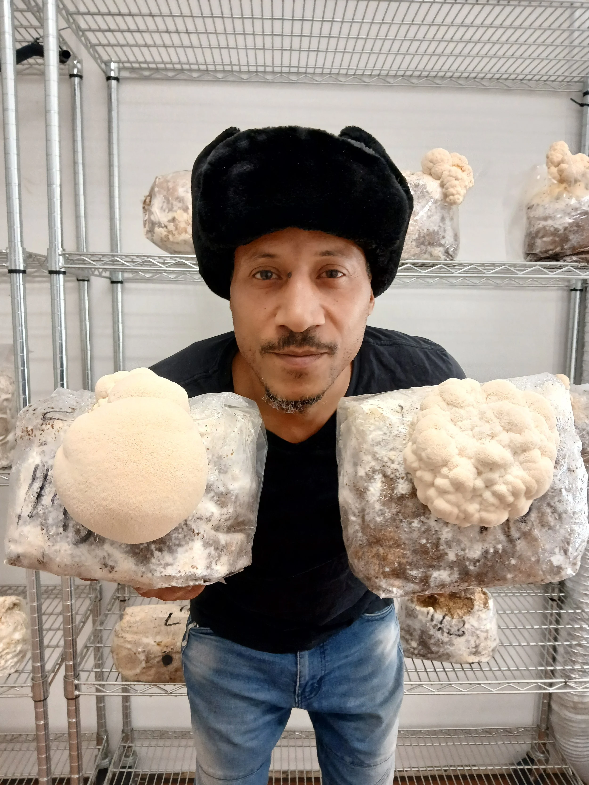

The Visionary Behind the Mycelium
BeShroomed Farms was born from the vision of James "Osotrari" Washington. With over 25 years of experience cultivating mushrooms, Oso chose to build his dream right here in his hometown of Detroit, anchoring the East English Village neighborhood.
Despite outside advice to move the operation to the suburbs, the mission was clear: make functional wellness and hands-on education accessible directly to the local community.

The Urban Farm & Lab
Transparency is at our core. Guided by Lab Director Tim Reed, our indoor aeroponic farm allows visitors to literally watch the mycelium fruit while sipping their coffee.
From spores to the final Trinity Blend cup, everything is cultivated with a deep respect for natural fungi and modern agricultural science.
More Than Just Retail
We believe in the power of gathering. BeShroomed Farms serves as an educational hub, hosting classes on mushroom identification, foraging, and home-growing techniques.
With an expanding space for live jazz, spoken word nights, and community events, we are proud to be a living, breathing part of the East Side.